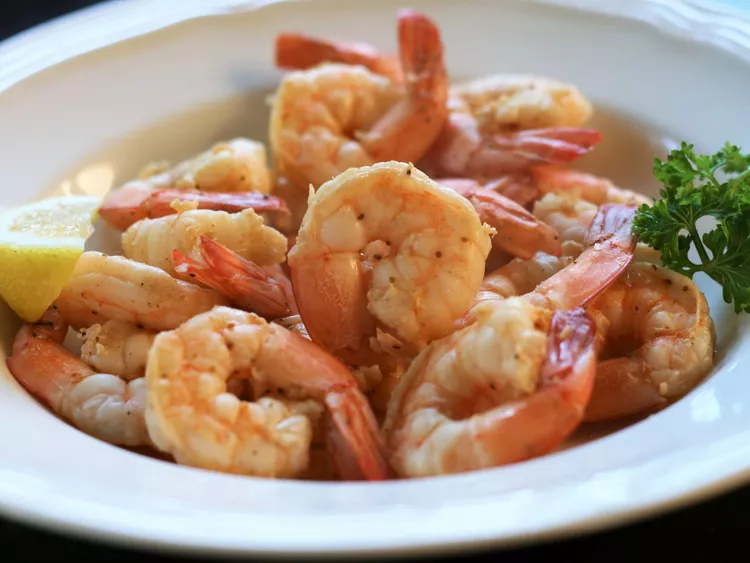

Seasoned Steamed Shrimp

Description
These shrimp are great as a main dish or as an appetizer. Serve with rice, or your favorite pasta dish.
Ingredients:
- 1/2 cup water
- 1/2 cup white wine vinegar
- 2 tablespoons seafood seasoning (such as Old Bay®)
- 1 pound fresh large shrimp, de-veined with shells on
Steps:
- Bring water, vinegar, and seafood seasoning to a boil in a saucepan over high heat. Add shrimp and stir
- Cover and cook until shrimp are bright pink on the outside and the meat is no longer transparent in the center, about 4 minutes. Drain
Back to home